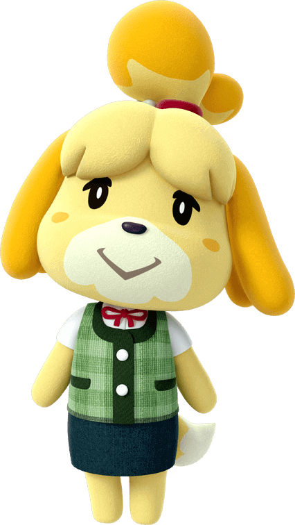

Las expresiones son gestos y reacciones que tu personaje puede usar para comunicarse sin palabras. Permiten mostrar emociones como alegría, tristeza, enfado, sorpresa o entusiasmo, y son una parte muy divertida de la interacción social en la isla. Las expresiones pueden usarse en cualquier momento para reaccionar a situaciones, posar en fotos, saludar a otros jugadores o simplemente darle más vida a tu personaje. Muchos jugadores las utilizan para crear escenas, hacer roleplay o grabar vídeos dentro del juego. Existen decenas de expresiones diferentes, desde aplausos y risas hasta bostezos o reacciones de sorpresa, y coleccionarlas todas es uno de los pequeños retos del juego.
